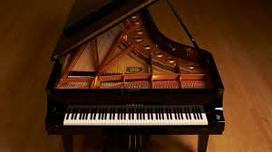
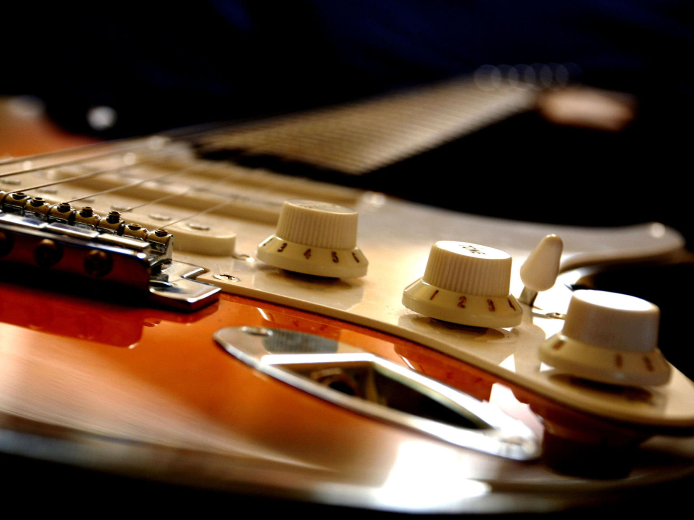

The piano is a keyboard instrument that produces sound when its keys are depressed, through engagement of an action whose hammers strike strings. Most pianos have a row of 88 black and white keys, representing each note of the chromatic scale.
See More
Played by a cellist or violoncellist, it enjoys a large solo repertoire with and without accompaniment, as well as numerous concerti. As a solo instrument, the cello uses its whole range,, from bass to soprano, and in chamber music such as string quartets .
See More

The style and sound of rock music has branched out into many subgenres since the 60s, but the essence of rock guitar has remained the same. Whether classic or modern, the power chords, pentatonic licks, and distorted tones are still at the core of any rock guitarist's sound.
See More